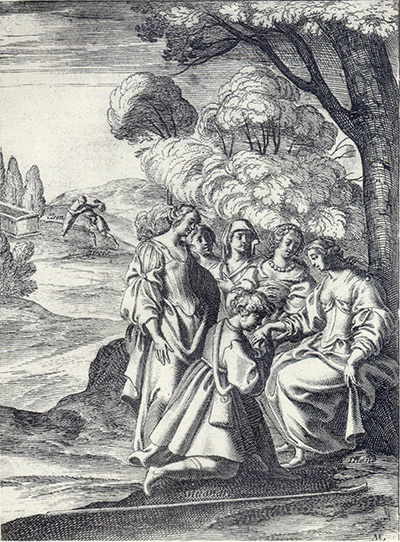
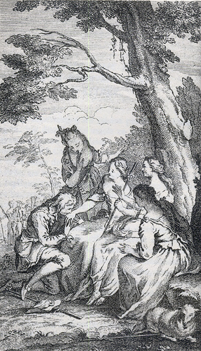

L'Astrée
d'Honoré d'Urfé
Première partie
Livre 7

Devant Astrée, Phillis, Léonide et une femme qui n'est pas dans le roman
Silvandre baise la main de Diane (1, 7, 199 recto)
Au fond, Tircis déplace le cadavre de Cléon (I, 7, 210 verso)
L'AstréeI, 7. Édition Vaganay**, 1925Devant Astrée, Phillis, Léonide et une femme qui n'est pas dans le roman
Silvandre baise la main de Diane (1, 7, 199 recto)
Au fond, Tircis déplace le cadavre de Cléon (I, 7, 210 verso)
(Voir Illustrations)

Devant Astrée, Phillis et Léonide, Silvandre baise la main de Diane (1, 7, 199 recto)
L'AstréeI, 7. Édition Vaganay**, 1925.Devant Astrée, Phillis et Léonide, Silvandre baise la main de Diane (1, 7, 199 recto)
(Voir Illustrations)
Édition de 1607, 295 recto (sic pour 195 recto).
Édition de Vaganay, p. 237.
Villanelle de
Hylas
sur son
inconstance
Arrêter mes légers esprits,
* Par des faveurs et des caresses ;
Car celle qui m'arrêtera
Beaucoup plus d'honneur en aura.
Bergère, sans lui faire autre réponse, s'adressa à Silvandre et lui parla de cette sorte :
Stances.
Sur la mort de Cléon
* Mais je me trompe, Ô Dieux ! Ma Cléon n'est point morte,
Son cœur, pour vivre en moi, ne vivait plus en soi.
Le corps seul en est mort, et de contraire sorte,
Mon esprit meurt en elle, et le sien vit en moi.
Oracle
Jugement de Silvandre
Des causes débattues devant nous, le point principal
est de savoir si Amour peut mourir par la mort
de la chose aimée, sur quoi nous disons qu'une
Amour périssable n'est pas vrai Amour, car il doit
suivre le sujet qui lui a donné naissance. C'est
pourquoi ceux qui ont aimé le corps seulement
doivent enclore toutes les Amours du corps dans
le même tombeau où il s'enserre, mais ceux qui
outre cela ont aimé l'esprit doivent avec leur
Amour voler après cet esprit aimé jusques au plus
haut Ciel, sans que les distances les puissent séparer.
Donc toutes ces choses bien

Livre 6

Livre 8
Référence électronique :
document.write('"'+document.title.substr(0, document.title.indexOf("-")-1)+'". '+"Dernière mise à jour : "+ExtractDate(document.lastModified)+".")Deux visages de L'Astrée.
©2005-2020 E. Henein.
URL :
var today = new Date();
document.write(document.URL +
"<br>Consulté le : " + today.toLocaleDateString("fr-FR") + ".");
var _gaq = _gaq || [];
_gaq.push(['_setAccount', 'UA-19288475-1']);
_gaq.push(['_trackPageview']);
(function() {
var ga = document.createElement('script'); ga.type = 'text/javascript'; ga.async = true;
ga.src = ('https:' == document.location.protocol ? 'https://ssl' : 'http://www') + '.google-analytics.com/ga.js';
var s = document.getElementsByTagName('script')[0]; s.parentNode.insertBefore(ga, s);
})();
Deux visages de L'Astrée.
©2005-2019 Eglal Henein. Creative Commons 4 
Édition critique de la première partie de L'Astrée (1607, 1621)
mise en ligne le 9 avril 2007
Édition critique de la deuxième partie de L'Astrée (1610, 1621)
mise en ligne le 10 octobre 2010
Édition critique de la troisième partie de L'Astrée (1619, 1621)
mise en ligne le 1er novembre 2014
Édition critique de la quatrième partie de L'Astrée (1624)
mise en ligne le 15 janvier 2019
document.write("Dernière mise à jour : "+ExtractDate(document.lastModified))